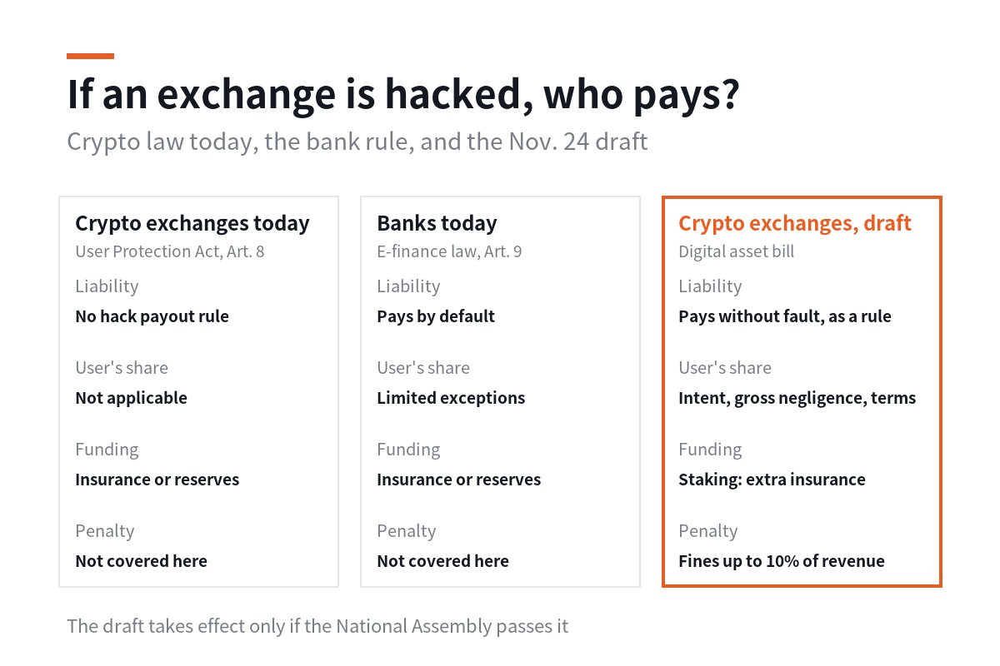
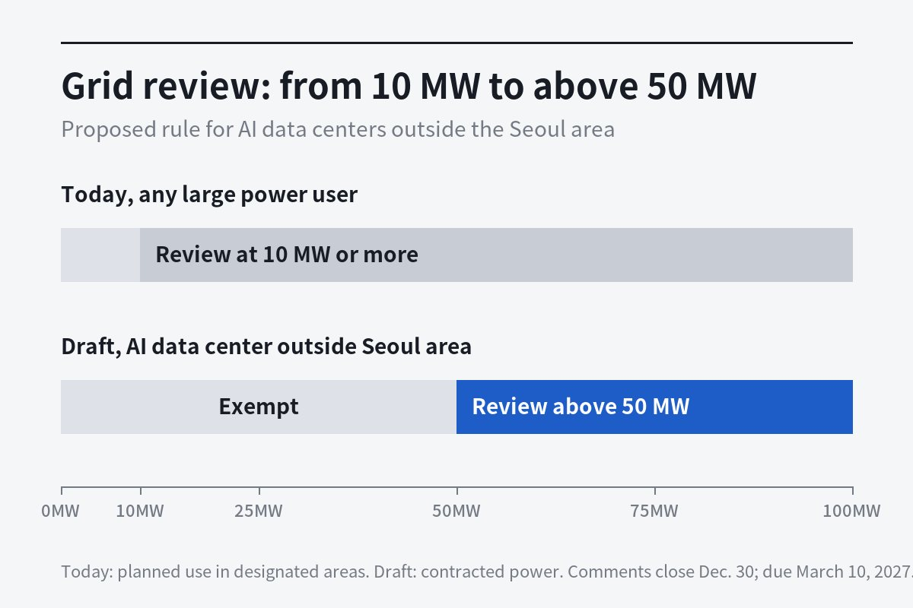
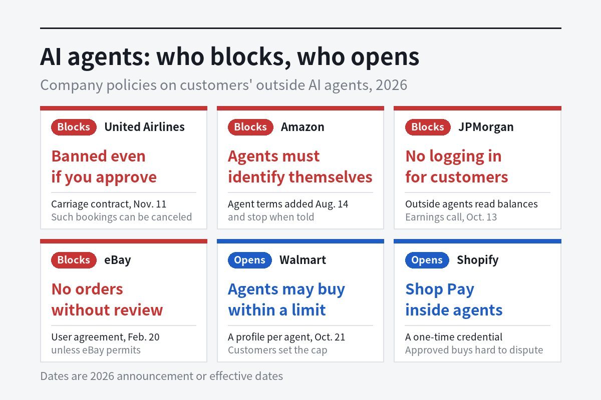

HOLT NEWS，韩国经济与贸易
今日经济：中国与韩国
图表为近一年走势
韩国加密资产法案：交易所被黑，原则上无过错也要赔
韩国金融委员会11月24日讨论了数字资产法制定案。因黑客攻击或系统故障发生事故时，交易所等数字资产业者原则上即使没有过错也要赔偿用户损失。用户有故意或重大过失，或条款另有规定时，用户也要承担责任。对于黑客事故，现行法律只规定了用保险或准备金做准备的义务。草案须经国会通过才能施行。

韩国拟放宽地方AI数据中心用电审查：50兆瓦以下免评估
韩国科学技术信息通信部11月20日公布《人工智能数据中心特别法》施行令和施行规则草案。在首都圈以外新建的AI数据中心，签约电力在50兆瓦以下的，可免除电力系统影响评估。现行规定要求在指定地区用电10兆瓦以上的企业接受评估。草案征求意见至12月30日，计划与法律一同于2027年3月10日施行。

纽约联储行长点名AI芯片需求，韩国芯片每公斤出口额一年涨到2.7倍
纽约联邦储备银行行长约翰·威廉姆斯11月23日说，美国通胀“实在太高”，并把AI投资带来的芯片等商品需求列为三大原因之一。韩国海关数据显示，韩国集成电路出口每公斤的金额一年里涨到2.75倍。韩国芯片最大的买家正是中国。

韩国要求大企业公开安全记录，连分包工人死亡也要写进去
韩国常雇员工500人以上的企业、年施工额大的建筑企业和公共机构，须在每年4月30日前公开安全保健现况，按现行法令首次期限为2027年4月30日，使用分包的总承包方还要写明在其场所因事故死亡的分包工人情况。不公示的罚款最高1000万韩元（约7400美元）。

韩国财阀是什么？家族直接持股3.5%，集团内部持股61.4%
韩国公平交易委员会2026年指定了102个资产超过5万亿韩元（约37亿美元）的企业集团，三星居首。在有"总帅"的89个集团里，总帅家族直接持有的股份按资本加权平均只有3.5%，加上集团自家公司的持股，内部持股达到61.4%。

在韩国用KakaoPay、Toss，身份证照片也要过政府核验了
从11月23日起，韩国KakaoPay和Toss在线上核实客户身份时，会通过政府系统连同照片核验居民登录证真伪，Naver Pay 12月跟进。这次公布的只涉及居民登录证。想防止别人用自己的名义办理非面对面贷款、线上开活期账户或登记开放银行，韩国另有一套可以自己申请的“安心阻断”。

韩国储蓄型保险满期后3年内可转年金，1亿韩元最快要领到86岁半才超过本金
从12月1日起，韩国人寿保险公司对附有年金转换特约、尚未领取满期保险金的储蓄型保险，在满期后3年内都受理转为年金的申请。把金融监督院示例中的月领金额不计利息累加，65岁男性选保证10年的终身年金，要领到86岁半才超过1亿韩元。

韩国KOSPI较高点跌48%，政府准备股市稳定基金、放宽回购上限
KOSPI指数11月23日收于4,708.54点，比6月22日的历史最高收盘点低48%。从11月24日起，上市公司可在一天内下单买入全部申报回购股数；政府也在准备股市稳定基金。2020年的方案规模为10.7万亿韩元，这次的规模和启动条件尚未公布。

韩国对华出口额翻倍，发往中国的集装箱却几乎没增加
韩国11月1日至20日对华出口额比去年同期增长145.6%，但6月至10月从韩国港口发往中国的重箱只增加2.4%，10月韩国至中国的运价还比一年前低6.3%。同期上涨的是美国和欧洲航线：10月韩国至美国西海岸40英尺集装箱运价上涨82%，至欧盟上涨48%。

韩国11月前20天进口增长39%：多买的主要是芯片和能源，自华进口增长52.5%
韩国关税厅初步统计显示，11月1日至20日韩国进口503亿美元，比一年前同期多142亿美元，其中自华进口130.7亿美元，增长52.5%。增量的69%来自半导体、原油、天然气和半导体制造设备四类。去掉这四类，进口增长17.6%。

韩国11月前20天对华出口增长145.6%，可今年运出的货更轻了
韩国关税厅初步统计显示，11月1日至20日韩国出口774亿美元，是一年前的两倍，其中对华出口200.5亿美元，增长145.6%。但截至11月19日，韩国今年出口货物的重量比一年前同期少了4.9%。

韩国明年推出“找回未申领医疗保险金”服务，但3年时效不等人
韩国金融委员会说，2027年第一季度内会在“实损24”应用里加入查找未申领保险金的功能。可是实损医疗保险的保险金过了3年就不能再申领，服务上线之前就到期的就诊不少。到哪一天为止，现在自己去哪里查，这里一并说明。

按金额算，中国产汽车成韩国进口车第一大来源，九成是纯电
2026年1月至10月，韩国进口的乘用车中，中国工厂生产的车为42.2亿美元，超过德国产的41.9亿美元。其中92.0%是纯电动车。中韩自贸协定并没有降低汽车关税。

巨无霸在中国3.91美元，巴基斯坦3.89，韩国3.84：价格差不多，负担差几十倍
《经济学人》2026年7月的巨无霸指数里，一个巨无霸在巴基斯坦卖3.89美元，在韩国卖3.84美元，在中国是26.5元，约3.91美元。三个地方的价格相差不到8美分，和收入一比，负担却差得很远。

韩国成品油对华出口量少了四成，每吨出口额却涨了77%
按韩国关税厅数据计算，2026年3至10月韩国出口到中国的成品油为158.8万吨，比上年同期少40.0%，出口额却增加6.5%至17.9亿美元，每吨平均出口额从636美元升到1,128美元。韩国政府从3月起把汽油、柴油、煤油的出口量限制在上年同月水平以内，11月起只对柴油有条件地放宽到110%。

韩国老版医疗险换第五代，保费头3年半价，第4年起翻倍
从11月23日起，2013年3月以前投保、没有重新投保条件的韩国实损医疗保险，换成第五代可以在3年内只交一半保费。折扣结束以后要交多少，守着老保险每年等于多花多少，什么情况下折扣会中断，我们算了一遍。

中国港口遇台风拥堵，三季度釜山中转量增两成
2026年7月至9月，釜山港处理集装箱677万TEU，其中六成是其他国家的货物在这里换船的中转箱。韩国海洋水产部称，台风导致中国港口拥堵，改挂釜山的船只增多，与中国相关的中转量增长25.9%。不过，在釜山换船并不会改变货物的原产地。

美国25美元最低工资法案有两个版本，只有参议院版把25美元当作底线
民主党提出的25美元最低工资法案《全民生活工资法》，众议院版和参议院版常被当成一回事。其实不一样。众议院版把最低工资封顶在中位时薪的三分之二，按现在的中位时薪算大约16美元。

韩国方便面出口增24%，中国仍是最大市场
根据韩国关税厅数据计算，截至2026年10月的12个月里，韩国方便面等面类出口增长24.4%，达到19.81亿美元。中国仍是最大市场，进口额4.65亿美元，增长22.3%。“火鸡面”生产商三养食品正在浙江嘉兴建设工厂，目标2027年1月完工，用于供应中国国内市场。

日本“50年房贷”越来越多，韩国首都圈限30年
在日本住宅金融支援机构的调查中，过半数受访金融机构把浮动利率房贷的最长期限定为50年。日本金融厅在2026年9月的金融行政方针中表示，将关注这类贷款是否与借款人的收入前景相符。韩国的做法相反，2025年6月起把首尔首都圈等地的房贷期限限制在30年以内。本文用同一公式比较两种做法。

在韩国错过5月劳动奖励金？12月1日前还能补申请，按95%发放
韩国国税厅给26万户符合或可能符合2025年度劳动奖励金、子女奖励金条件却没有申请的家庭寄出了通知。12月1日前补申请，可领取计算金额的95%，2027年1月15日到账。与韩国人结婚的外国人，或有韩国国籍子女的外国人，也可能在名单上。

亚马逊、美联航把AI购物助手挡在门外，沃尔玛却让它在限额内下单
美联航、亚马逊、摩根大通和eBay不让顾客用的AI助手替人下单，沃尔玛和Shopify则设好额度放行。分歧背后是两个问题：生意留在谁手里，AI买错了东西由谁买单。

韩国全权委托账户纠纷：没有单只股票法定上限，有客户九成资金押在KOSDAQ高风险股
韩国金融监督院11月16日公布了券商"全权委托账户"（wrap account）的纠纷案例。和公募基金不同，这类账户没有单只股票的法定上限；提前解约手续费和海外股票资本利得税也让一些投资者吃了亏。在韩国用券商账户投资的中国居民同样适用这些规则。

美联储点名AI数据中心：未计入负债的承诺超过3万亿美元
美联储11月13日发布的金融稳定报告，专门梳理了AI数据中心背后的借贷。今年新发行的相关债务超过6,800亿美元；7家大型科技公司未计入资产负债表的租赁、担保和长期合同，按未折现金额超过3万亿美元。这几个数字衡量的范围各不相同，不能相加。

韩国护肤品最大出口市场换位：美国超过中国
根据韩国关税厅数据计算，截至2026年10月的12个月里，韩国护肤品对美国出口增长39.8%，达到20.56亿美元，超过对中国的16.25亿美元。对中国出口下降2.5%，在韩国护肤品出口中所占比重从19.9%降到14.8%。不过运往中国的货物按重量计减少了8.7%，每公斤平均价格反而上涨6.8%。

中韩服务投资谈判完成：开放了什么
中韩两国宣布自贸协定服务和投资领域后续谈判实质性完成。中方承诺对韩国影视、游戏给予最惠国待遇，事前审查本身仍然保留。协定还需正式签署并完成国内程序才能生效，2015年的原协定从完成谈判到生效用了约13个月。

国际油价回落，韩国汽油限价为什么还是一动不动
韩国把炼油厂卖给加油站的汽油价格上限定在每升1784韩元(约8.9元人民币)，已经连续六次没变，这一次管到12月11日。布伦特原油比10月均价低了一些，但仍比6月底定价时高出约三分之一。成本超出上限的部分先由炼油厂扛着，政府答应按季度、按成本补偿。

韩国反倾销税实施后，中国热轧卷对韩出口下降77%：订单流向了哪里
2026年1—10月，韩国自中国进口的热轧钢材比上年同期减少77%。日本在韩国热轧进口中的份额从44%升至65%，台湾和越南的对韩出口成倍增长；而不在征税范围内的中国冷轧卷和板坯等半成品，对韩出口分别增长58%和88%。

韩国年出口将破1万亿美元 中国仍是最大买家
截至11月10日，韩国今年出口已达9637亿美元，按目前速度将在11月19日至20日前后突破1万亿美元，成为继美国、德国和中国之后全球第四个年出口破万亿的国家。1至10月韩国对华出口1985亿美元，占总额的21.3%，同比增长87.6%。上世纪六七十年代，韩国还在出口野生花栗鼠和从公共厕所收集的尿液。本文用海关数据对比两个时代。

中国发往韩国的海运费是反方向的3.7倍 美国发往韩国却不到四分之一
韩国关税厅按报关单统计的海运费显示，2026年10月，一个40英尺集装箱从中国运到韩国的运费是从韩国运到中国的3.7倍，一年前为2.3倍。同一时期，从美国西海岸运到韩国的运费只有反方向的24%。原因之一在集装箱流向：从中国运进韩国港口的集装箱只有3%是空箱，而从韩国运往中国的集装箱有47.7%是空的。

点一次“允许”，Meta被罚8.05亿欧元：总部在爱尔兰，为什么是意大利出手
意大利个人数据保护局11月14日对Meta开出8.05亿欧元(约59亿元人民币)的罚单，理由是安卓版Facebook没有就一项功能单独征得同意，就读取了意大利用户的手机相册。Meta的欧洲总部在爱尔兰，这一次意大利却可以自己动手。同样的事放到韩国法律里，会走出两条不同的路。

韩国过半上班族月薪超过300万韩元，约合1.5万元人民币，有统计以来头一回
月薪500万韩元(约2.5万元人民币)以上的人也占到17.6%，是上半年调查里最高的一次。不过月薪不到100万韩元的人同样变多了，行业之间差得也很远。

The same 12.5% Section 301 tariff costs Korean goods less than Vietnamese ones
For goods entered on or after July 24, 2026, a Section 301 duty tops Korean goods with a duty rate below 12.5% up to a combined 12.5%. Goods from Vietnam and Thailand pay 12.5% on top of their regular rate. On instant noodles, with a 6.4% regular rate, that is 12.5% from Korea (without a KORUS claim) and 18.9% from Vietnam.

Brazil, Australia and Spain gain share of Korea's chicken, beef and pork imports
Over the past 12 months Brazil supplied 80% of Korea's chicken-cut imports by value, up from 71%, while Thailand fell to 16%. Australia gained in frozen beef even though US beef became duty-free in January, and Spain overtook the US in frozen pork import value despite a higher average price per kilogram. Our calculations from Korea Customs Service data.

Korea's main mortgage rate index hits 3.62%, its highest in two years and eight months
The cost-of-funds index most widely used for Korean variable-rate mortgages rose to 3.62% in October, its highest in two years and eight months. A sister index published the same day sits at 2.93%. The gap between them is the widest since early 2023, and which one a loan tracks decides how fast the borrower's payment climbs.

South Korea loan sharks: loans above 60% interest are void, and victims can now seek help online
South Korea's illegal-loan victims can now ask for help online instead of visiting a center. Under a 2025 law, a private loan priced above 60% a year is void in full, principal included. Here is how the rate is calculated, and what borrowers under the line can still refuse to pay.

South Korea to let credit card points become local currency from 2027
Under a government plan, Korean cardholders could move credit card points, a 2.1 trillion won (about $1.6 billion) pool, into city and county vouchers from May 2027. The same points can already be cashed out. Vouchers come with legal limits on where they can be spent and when leftover money comes back.

Korea suspends its 140% margin-loan rule. A 130% line delays margin calls less than it sounds
To stop forced selling from deepening a market slide, Korean regulators suspended the 140% collateral rule on brokers' margin loans for three months from November 9. Several big brokers cut their line to 130%. For an investor who borrowed half to all of their own stake, that buys only 3 to 5 percentage points of extra room.
资料: 中国外汇交易中心 · 韩国关税厅 · 韩国银行 · 韩国统计厅 · 韩国进出口银行